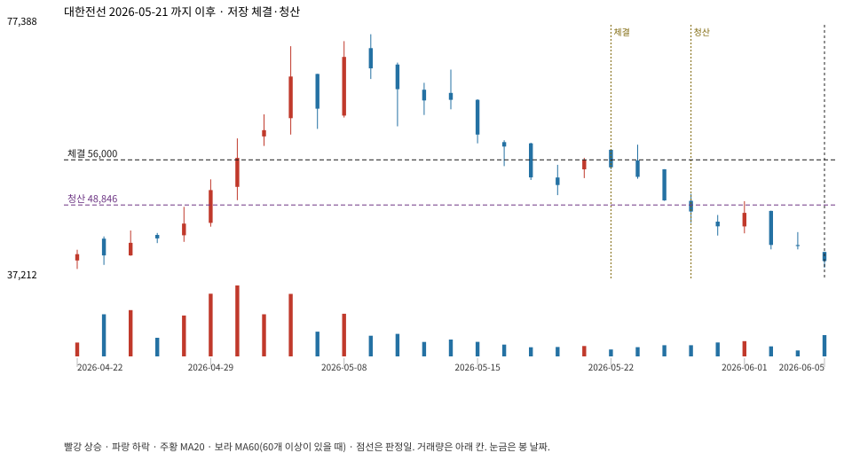

계좌를 다시 돌리지 않았다. 아래는 저장된 주문·체결·청산·비용·손익이다.

{
"case_id": "5e10220ebcd6dda1",
"status": "closed",
"trade": {
"symbol": "001440.KS",
"signal_date": "2026-05-21",
"quantity": 154,
"entry": 56000,
"stop": 48870,
"target": 75900,
"planned_risk": 1117929.207009999,
"reserved_cash": 8632623.999999998,
"fill": {
"date": "2026-05-22",
"price": 56000,
"fee": 8624
},
"exit": {
"date": "2026-05-28",
"price": 48845.565,
"reason": "stop",
"net_pnl": -1117929.2070099972,
"ambiguous_bar": false
}
},
"cost": "research fee 10bp each side, slippage 5bp; amounts below are the stored ledger, not a new run",
"chart": "c\/5e10220ebcd6dda1.svg"
}